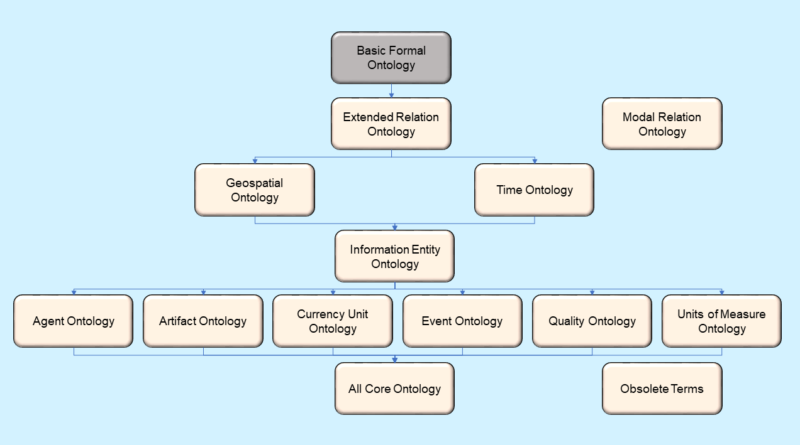

The Common Core Ontologies (CCO) were created by CUBRC, Inc. during its participation in the Intelligence Advanced Research Projects Activity (IARPA) Knowledge, Discovery and Dissemination program (KDD). The CCO are a set of nine mid-level ontologies with domains of: agents, artifacts, events, information, currency, space, qualities, time and units of measure. Also included in the distribution files of the CCO are the Extended Relation Ontology and Modal Relation Ontology. The former provides a set of approximately 200 relations that are used to create assertions with the classes of the mid-level ontologies. The latter is offered as a means for forming assertions about planned or other types of modal entities. The AllCoreOntology.ttl and ObsoleteTerms.ttl files are included among the distribution files also. They are utility files that allow all of the mid-level content to be imported into a single view and enable backward compatibility of versions of CCO respectively.
In November of 2017, the CCO were distributed as open source files. They are available for use under the Creative Commons Attribution 4.0 International License (CC BY 4.0).
The following persons have made significant contributions to the development of the Common Core Ontologies:
| John Beverley | Alexander P. Cox | Adam Czerniejewski | Brian Donohue | Mark Jensen |
| David Limbaugh | Neil Otte | Ron Rudnicki | Yonotan Schreiber | Barry Smith |
The CCO are developed using a methodology espoused by the Open Biological and Biomedical Ontology Foundry OBO Foundry. Using Basic Formal Ontology BFO as the upper ontology, the CCO are specializations of the BFO classes intended to provide a vocabulary about commonplace entities. While useful in themselves, the intended purpose of the CCO is to enable developers of domain ontologies to reuse CCO content and create only those classes needed to describe their particular area of interest. Documentation about the CCO methodology and representing information with the CCO is available at CCO Documentation .
The CCO are published in OWL using the Turtle syntax. The CCO files are available at CCO Ontology Files and the BFO files imported by the CCO files are available at BFO Files .The import structure of the CCO files is depicted in the diagram below.
